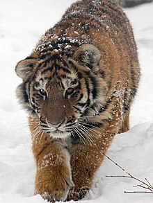
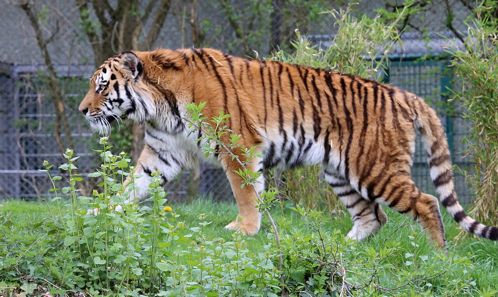
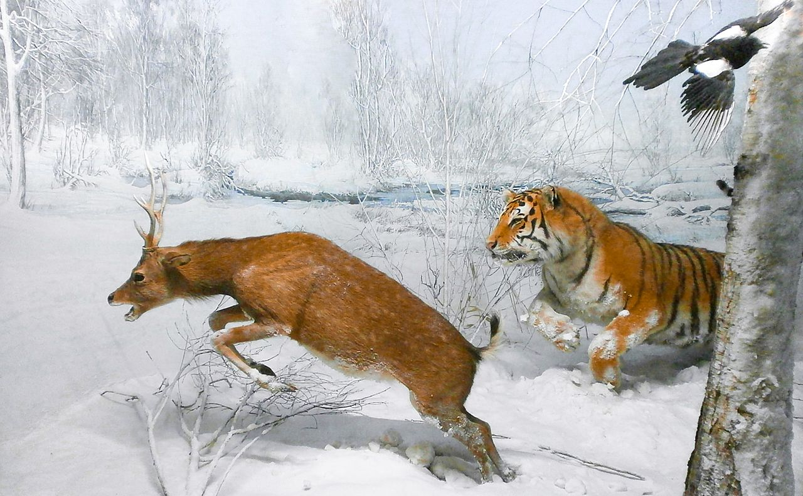
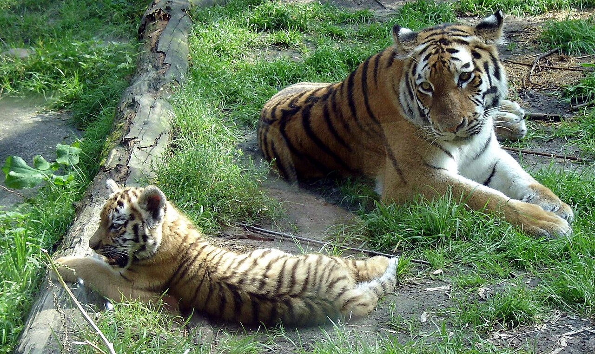
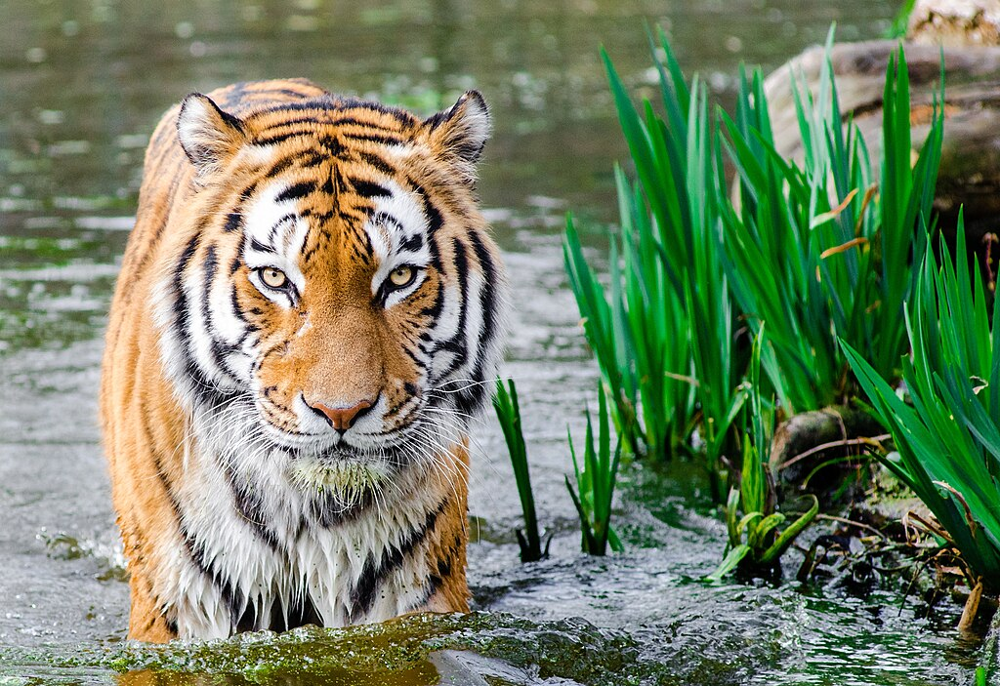

🐯 Hổ Amur (Amur Tiger) - "Chúa Tể Rừng Taiga"
🌿 Thông tin mở đầu:
Tên khoa học: Panthera tigris altaica
Phân bố: Chủ yếu ở vùng Viễn Đông Nga, đặc biệt là rừng Taiga ở Siberia, một số ít ở Trung Quốc và Bắc Triều Tiên.
Đặc điểm nổi bật: Hổ Amur, còn gọi là hổ Siberia, là loài hổ lớn nhất thế giới. Chúng nổi tiếng với bộ lông dày giúp chống chịu thời tiết lạnh giá và bộ sọc đen nổi bật trên nền lông cam.

📏 Kích thước và trọng lượng:
Chiều dài: Từ 2,7 đến 3,3 mét (bao gồm đuôi)
Cân nặng: Con đực từ 180 - 300 kg, con cái nhỏ hơn khoảng 100 - 160 kg

🍖 Chế độ ăn uống:
Hổ Amur là loài săn mồi đơn độc, chủ yếu săn các loài động vật có móng guốc như nai, hươu, lợn rừng và thỉnh thoảng là các loài nhỏ hơn như thỏ và cá.
Chúng có thể đi hàng chục km mỗi đêm để tìm kiếm thức ăn và có thể ăn tới 20-30 kg thịt trong một lần săn mồi thành công.

🏔️ Môi trường sống:
Hổ Amur sống ở các khu rừng hỗn hợp, rừng Taiga và rừng lá rộng, nơi có mùa đông lạnh giá và nhiều tuyết.
Chúng thích môi trường có cây cối rậm rạp để dễ dàng ẩn nấp và săn mồi.

🛡️ Tình trạng bảo tồn:
IUCN: Hiện ở mức "Dễ Tổn Thương" (Vulnerable).
Nguyên nhân suy giảm: Săn trộm, mất môi trường sống và khai thác rừng quá mức.
Nỗ lực bảo tồn: Nga và các tổ chức quốc tế đã thực hiện nhiều biện pháp bảo vệ, giúp số lượng hổ Amur trong tự nhiên tăng nhẹ trong những năm gần đây.

🌍 Vai trò trong hệ sinh thái:
Hổ Amur giúp kiểm soát số lượng các loài động vật ăn cỏ, từ đó duy trì sự cân bằng sinh thái trong các khu rừng Taiga rộng lớn.

Hổ aMu béo béo
by: Thanh Đẹp Trai